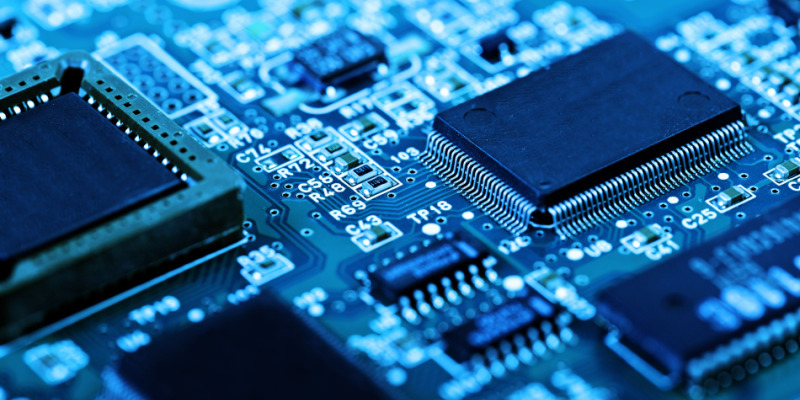

COMPUTER HARDWARES
MONITORA computer monitor is an output device that displays information in pictorial or textual form. A discrete monitor comprises a visual display, support electronics, power supply, housing, electrical connectors, and external user controls.Wikipedia |

KEYBOARDA computer keyboard is a peripheral input device modeled after the typewriter keyboard which uses an arrangement of buttons or keys to act as mechanical levers or electronic switches.Wikipedia |

MOUSEA computer mouse is a hand-held pointing device that detects two-dimensional motion relative to a surface. This motion is typically translated into the motion of a pointer on a display, which allows a smooth control of the graphical user interface of a computer.Wikipedia |